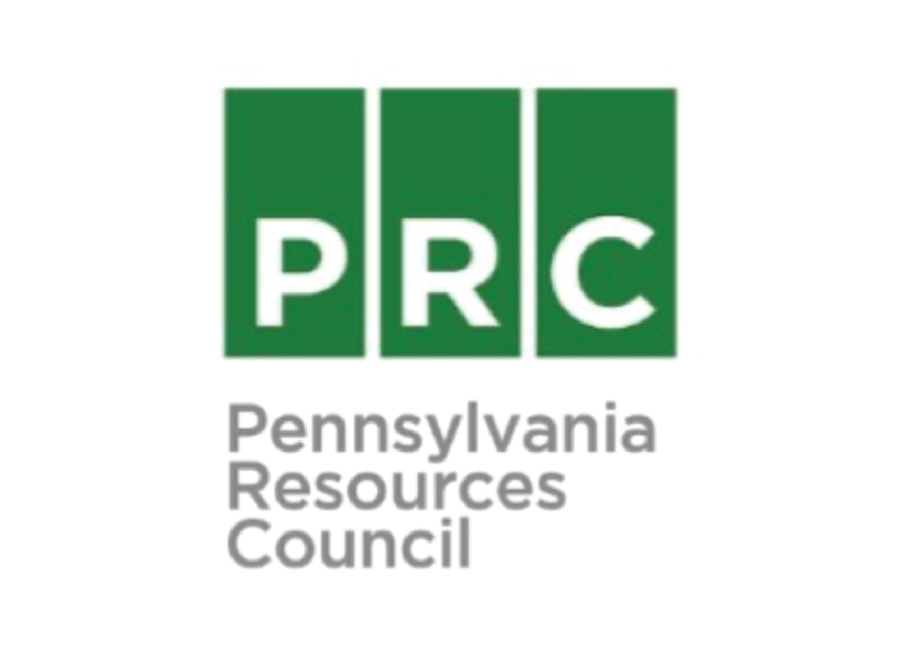

Pennsylvania Resources Council
Team
- Sai Dhulipalla
- Rebecca Kern
- Ziren Zhou
Opportunity
One of PRC’s services to the community is hosting the Recycling Hotline for the Pennsylvania Department of Environmental Protection. PRC receives calls from citizens across the state asking for recycling information on a variety of different items. This process requires data to be managed in two places: searching for a location near the caller where the item can be recycled and tracking caller information. The main problems in their previous process was that: (1) PRC’s information was stored in Excel spreadsheets making searching through their data hard to manage (2) The recycling locations are ever-changing and there was no indication of when data was last verified (3) Tracking calls and lookups both were two separate processes that used the same information, but required PRC to do double the work for each call.
Outcomes
Throughout the iterative consultation process, the application was deployed weekly for user feedback. Each week suggested changes and other newer features were added. During the semester, there were a list of features, bugs, etc. for us to implement that was consistently updated. These action items were ranked by importance of functionality to the overall application and completed accordingly. From low fidelity wireframes to our MVP to our final product, the user and the experience of taking a call and searching for what the caller had asked was prioritized. PRC worked with us closely to be sure that we were on the same page as we developed a solution to their problems.
Deliverables
Our deliverable is a web application built with Ruby on Rails that can record hotline call information in a spreadsheet, search for recycling locations in PA by county and zip code, and verify the integrity of the information in the database. We have preloaded the database with information from PRC’s current spreadsheets and included the git repository containing the code, and documentation and tutorials about the system to help train future employees.